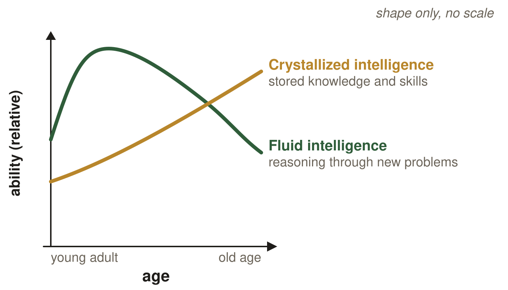
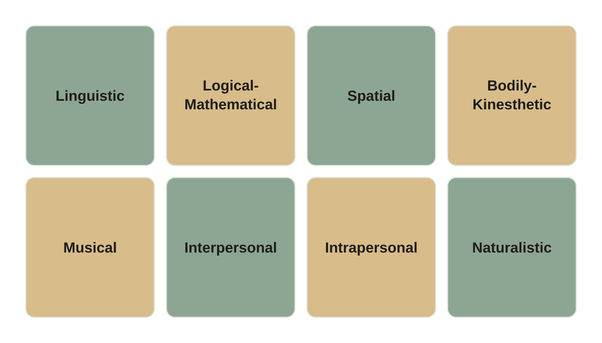
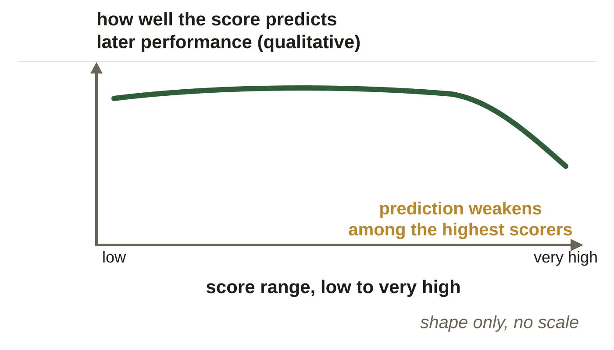
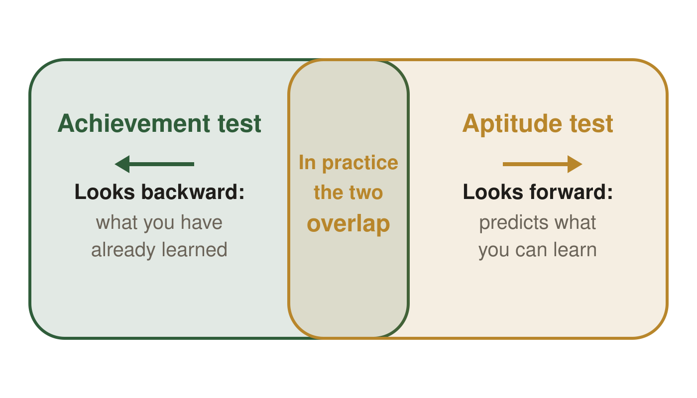
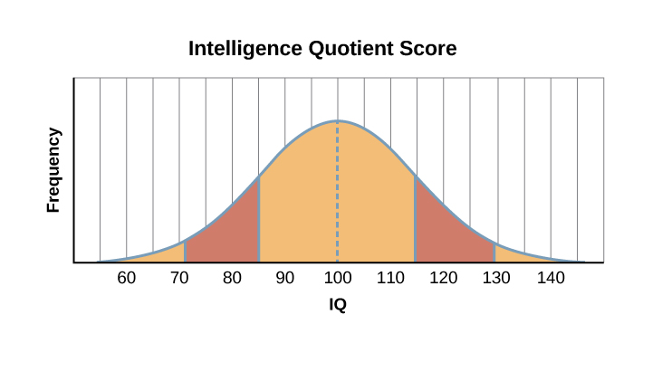

Intelligence and achievement. These are the same figures as in your Class Notes, in the same order. If a figure in your notes shows as a gray box, use this page instead.
Slide 7. Two Kinds of Ability

Fluid and crystallized ability across adulthood. Shape only, no scale.
Slide 9. Gardner's Longer List (continued)

Gardner's eight proposed intelligences. The tile colors are decorative and the order is not a ranking. Interpersonal means other people; intrapersonal means yourself.
Slide 25. Valid: Measuring the Right Thing

How well a score predicts later performance, across the score range. Shape only, no scale.
Slide 32. Where the Two Overlap

Achievement looks backward, aptitude looks forward, and the middle zone is where the two overlap.
Slide 34. Reading the Normal Curve

OpenStax, Psychology 2e, Figure 7.15, CC BY 4.0. Per the source, the gold band is one standard deviation either side of the mean, 85 to 115, and the darker band is the second, 70 to 130.